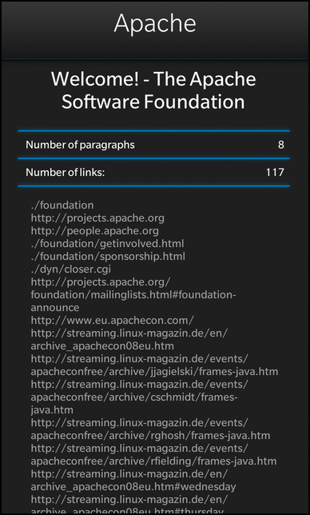

Files:
The XML HTML Info example provides statistics about the content of HTML files.

The files are parsed using a QXmlStreamReader object. If the file does not contain a well-formed XML document, a description of the error is reported.
Reading XML is handled by an instance of the QXmlStreamReader class, which operates on the input file object:
// Create a XML stream reader on the file QXmlStreamReader reader(&file);
The work of parsing and the XML and extracting statistics is done in a while loop, and is driven by input from the reader:
int paragraphCount = 0; QStringList links; QString title; /** * Read the XHTML document token by token until the end is reached. * For every token check whether it's one we are interested in and extract * the needed information. */ while (!reader.atEnd()) { reader.readNext(); if (reader.isStartElement()) { if (reader.name() == "title") title = reader.readElementText(); else if (reader.name() == "a") links.append(reader.attributes().value("href").toString()); else if (reader.name() == "p") ++paragraphCount; } }
If more input is available, the next token from the input file is read and parsed. The program then looks for the specific element types, "title", "a", and "p", and stores information about them.
When there is no more input, the loop terminates. If an error occurred, it is reported to the UI:
// If the XML stream reader signaled an error, report it to the UI if (reader.hasError()) { m_error = tr("The HTML file isn't well-formed: %1").arg(reader.errorString()); emit errorChanged(); return; }
If no error occurred, the example makes the statistics available to the UI.